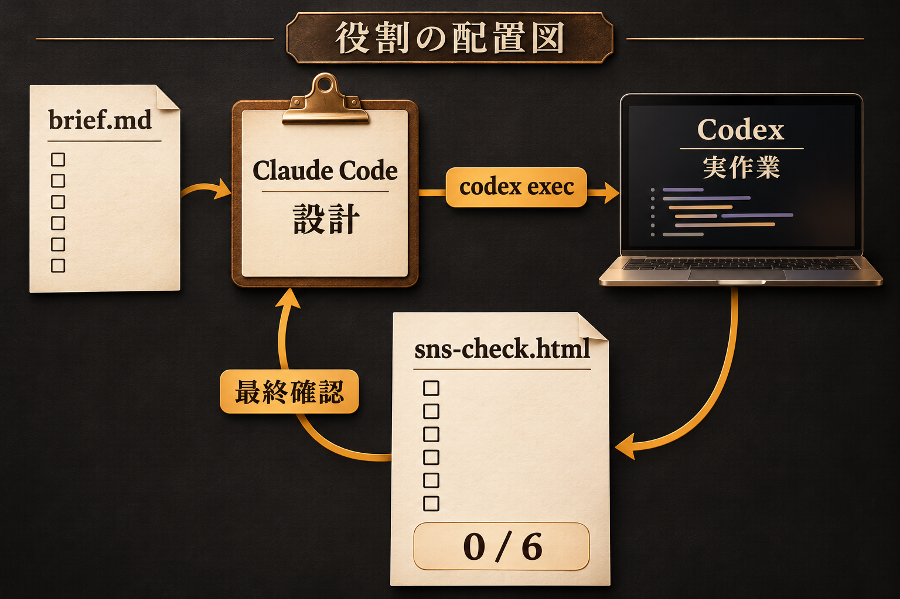
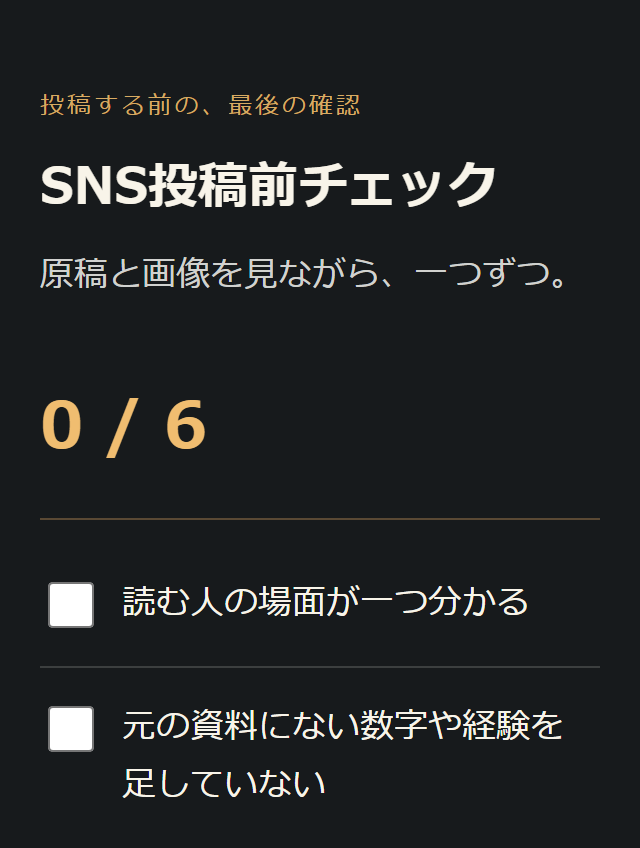
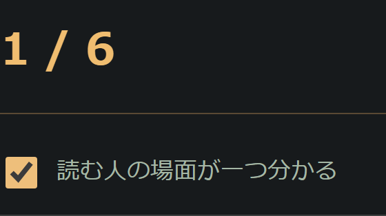

いそっち式 AIコンビ連携マニュアル

解説動画
本人の撮影後、掲載します。
同じ説明を、
AIごとに繰り返してない？
- AIに何を任せるか、決められない。
- 作れたけど、何を見直すか迷う。
要件を一つ渡して、
実作業と確認を分担させる。
「SNS投稿前チェック」を作ります。
保存してブラウザーで開きます。
実際の作業は
僕は、この役割分担でAI社員を動かしてる。同じ要件で実作業と確認を回すのがポイントです。
一つの要件で、最後まで

連携の実行画面は準備中です。下は今回制作した完成形の見本です。

完成見本は直接制作した参考ファイルです。AI間の連携実行結果ではありません。
練習フォルダーを開く
キットを展開し、ai-combi-practiceをClaude Codeの作業フォルダーにします。
練習キットを保存役割設定・要件・指示文入り。完成後も同じフォルダーを使います。
準備を確認する指示文
このPCでClaude CodeからCodex CLIを呼べるか、準備状況を確認してください。 この作業フォルダー以外や過去の会話は探索しないでください。 1. codex --version でCLIの有無を確認する。 2. codex login status で認証済みか確認する。メールや認証情報は出力・保存しない。 未導入なら公式 https://learn.chatgpt.com/docs/codex/cli を確認し、OSに合う導入手順を案内するだけにしてください。 未認証なら codex login を自分で実行するよう案内してください。 インストール・新規接続・ログイン・権限変更は自動で行わないでください。 準備ができたら「準備OK」、止まったら何が必要かだけ教えてください。
上の全文をClaude Codeへ。 Codex CLIの導入と認証を確認し、未認証ならPCのターミナルで
Codex CLIの導入と認証を確認し、未認証ならPCのターミナルでcodex loginを実行します。
必要な環境と公式手順
Claude CodeとCodex CLIが同じPCで動くことが前提です。各サービスの利用環境・認証・利用枠が必要です。Codex CLIではChatGPTアカウントでサインインできます。
Codex CLIの導入 ／ サインインの公式手順 ／ Claude Codeの導入
役割は同じフォルダーのCLAUDE.mdに保存されています。別フォルダーへ移ると、この設定は引き継がれません。既存ファイルを上書きせず、内容を確認してください。役割指示だけでAIの遵守や品質が保証されるわけではありません。
設計から実作業へつなぐ
下の全文をClaude Codeの入力欄へ。brief.mdを読み、 Codex CLIに実装を渡す指示です。
Codex CLIに実装を渡す指示です。
実制作の指示文
このフォルダーのCLAUDE.mdとbrief.mdを読み、SNS投稿前チェックを実制作してください。範囲はこのフォルダーだけ。親フォルダーや履歴は探索しないでください。 役割は、Claude Codeが設計と最終確認、Codex CLIが実装です。 1. brief.mdから短い設計と確認基準を決める。 2. シェルから codex exec --sandbox workspace-write --skip-git-repo-check --ephemeral を呼び、実装を依頼する。Codexへの指示はこのフォルダー内のファイルへ保存し、入力ファイルbrief.md、出力sns-check.html、6項目・完了数・リセット・外部通信なしの要件と確認基準を含める。モデル名は指定しない。 3. 完成したsns-check.htmlを読み、brief.mdの要件と照合する。不足があれば同じCLIで修正を依頼し、再確認する。 4. 保存ファイル名、実施した確認、未確認の操作を短く報告する。 新規接続・ログイン・公開・送信・購入・削除・権限やサンドボックスの緩和はしないでください。コマンドの承認が求められたら、その内容を説明して止まってください。Codexが呼べない場合は代作せず、連携未実行と報告してください。
進めた目印は、 Codexを呼んだ記録とsns-check.htmlの保存。承認が出たら、コマンドと書込先を確認して判断します。
Codexを呼んだ記録とsns-check.htmlの保存。承認が出たら、コマンドと書込先を確認して判断します。
止まったとき・役割を確かめる
Codexを呼べない、認証や承認が必要、ファイルがない。この場合は未完了です。権限を緩めるコマンドへ置き換えず、表示された理由を確認してください。
Claude Codeが自分でHTMLを作っただけなら、この作例の連携確認はできていません。実行記録にcodex execがあり、同じフォルダーに保存されたかを見ます。
ファイルで、動きを見る
同じフォルダーのsns-check.htmlをブラウザーで開きます。6項目を押し、完了数とリセットを確かめます。

ずれていたら下の全文をClaude Codeへ。修正後は保存し直し、ブラウザーを再読込します。
確認・修正の指示文
このフォルダーのbrief.mdとsns-check.htmlを照合してください。 不足があればCodex CLIに修正を依頼してください。外部公開や権限変更は行わないでください。 確認するのは、指定の6項目、チェックで完了数が変わること、リセットで0 / 6に戻ること、再読込で初期化すること、320px幅、外部通信なしです。 実行・確認していない項目は未確認と書き、両AIが同意しただけで完成にしないでください。 修正後はsns-check.htmlで保存し直し、ブラウザーを再読込して開ける状態にしてください。
ここまで揃えば、実践完了
 Codexへの依頼と実行記録がある。
Codexへの依頼と実行記録がある。- 保存したHTMLを開いて使える。
- 6項目・完了数・リセットを確認した。
まずは、この練習キットで一度通してみてください。
投稿の確認をAIに分担させたら、次は「その発信を収益につなぐ流れ」。SNSマネタイズを7日間の音声で学ぶ案内はこちらです。
100円の音声教材を見る